Phone screenshots of everything added since your last test, using the fictional Harbourview Pharmacy. Swipe sideways through each set. Leave notes in the app with the UAT notes button when you next open it.
For when you walk into the pharmacy. Today offers “Start a visit”, then shows up to three things worth seeing while you’re there, each with a reason. You can copy a short list for the pharmacist on duty. Inside the visit, a check shows what happened last time, and anything still open from an earlier visit.
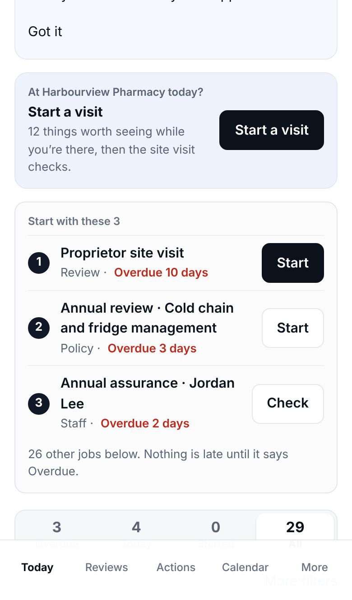
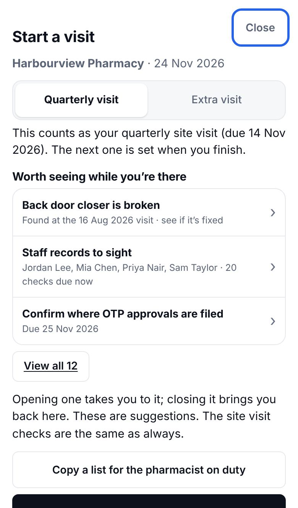
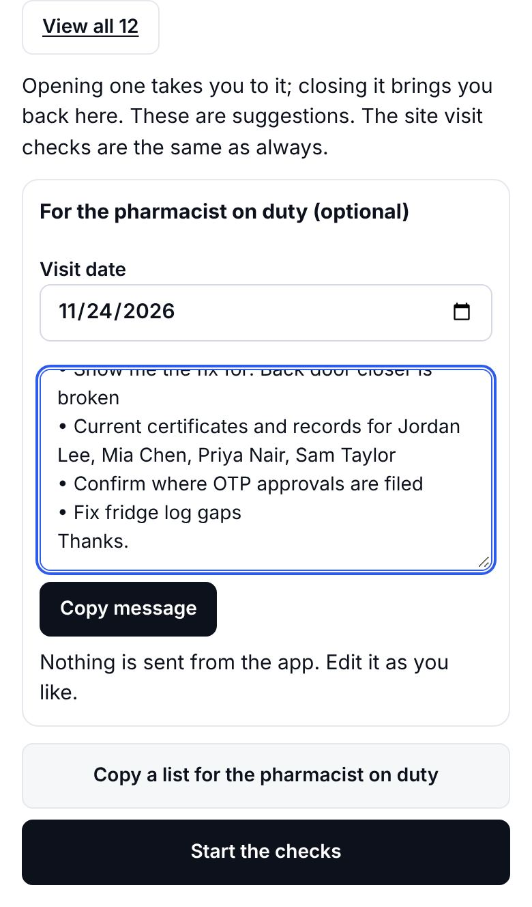
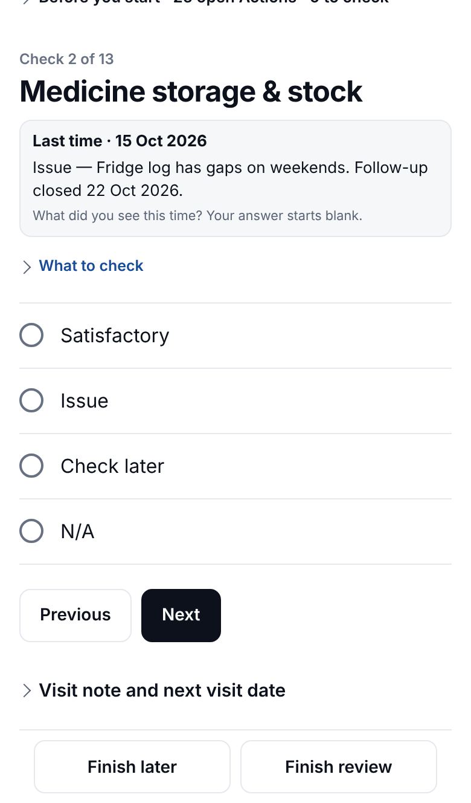
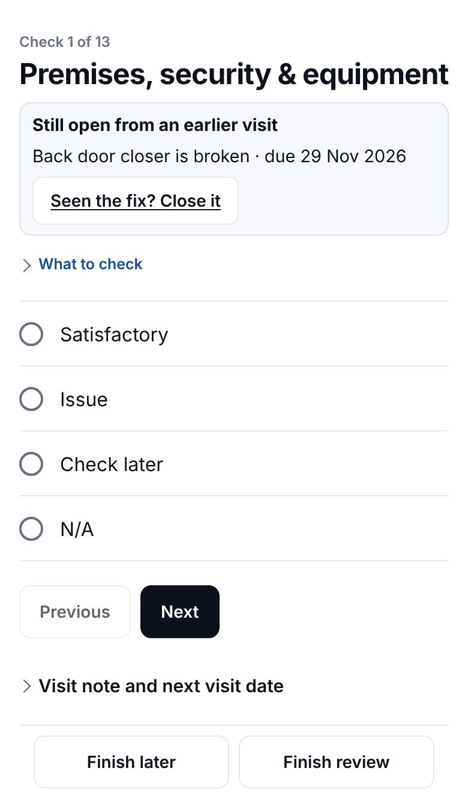
Four buttons with counts: Overdue, Today, Started, All. Everything else is under More filters, which slides up from the bottom.
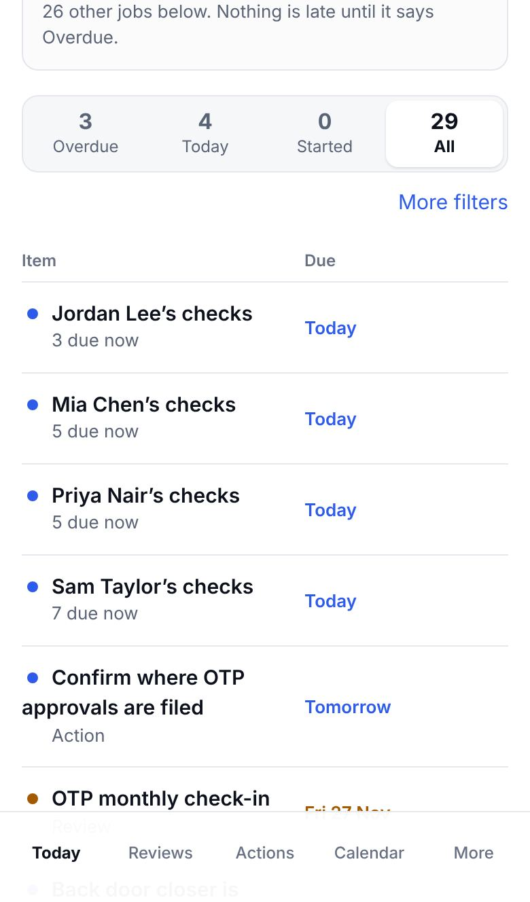
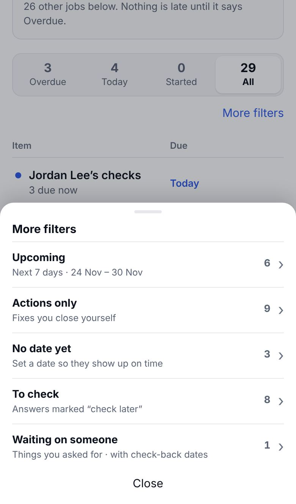
A person’s checks are one job that says how many are due now. “Review the 5 due now” opens them one after another; a banner on Today says which is next. Nothing is ticked off for you.
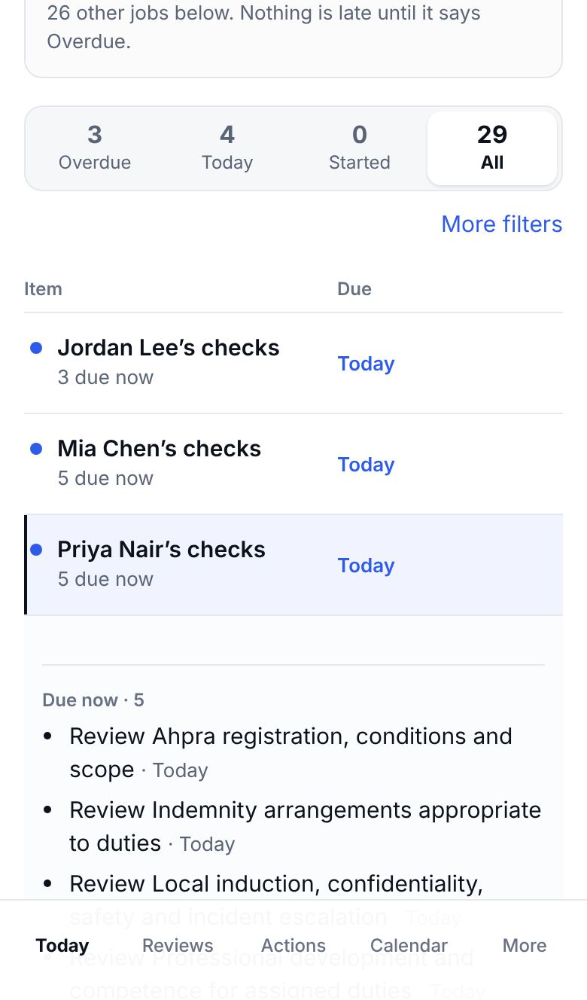
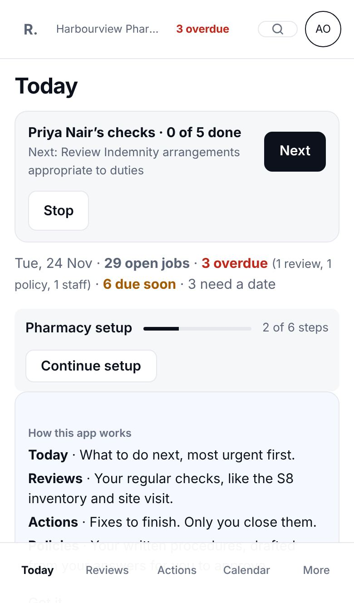
On any action you can note what you asked for and when to check back. The due date never moves and the action stays open. Full history shows the whole story of one action, from the original finding to today, and can be copied.
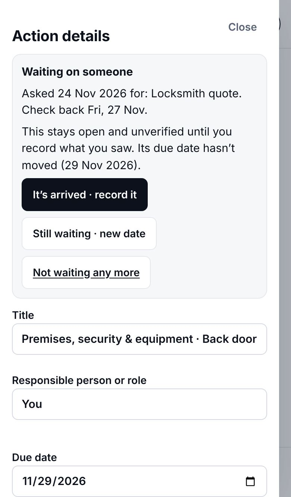
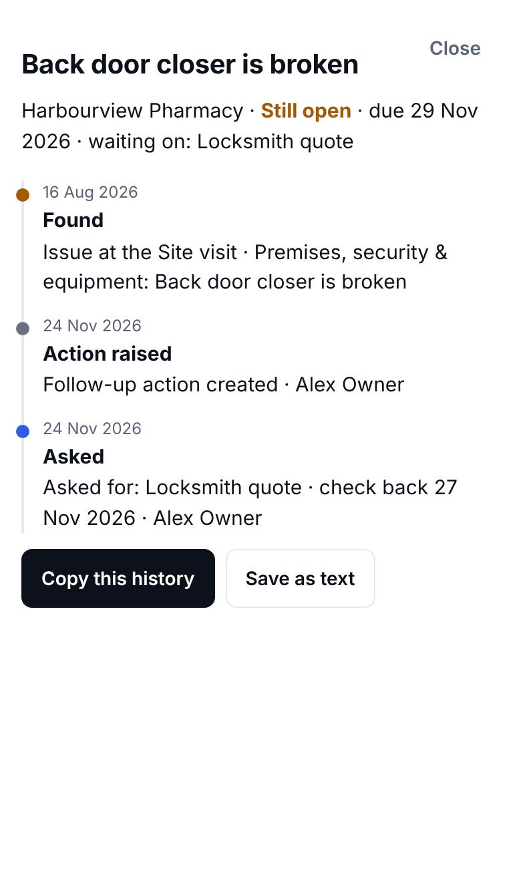
Pharmacy setup is a tappable list; a chip appears only where something needs attention. The pharmacist in charge isn’t asked for any more. S8 storage now reads as your responsibility, with the Regulation’s wording kept as a note.
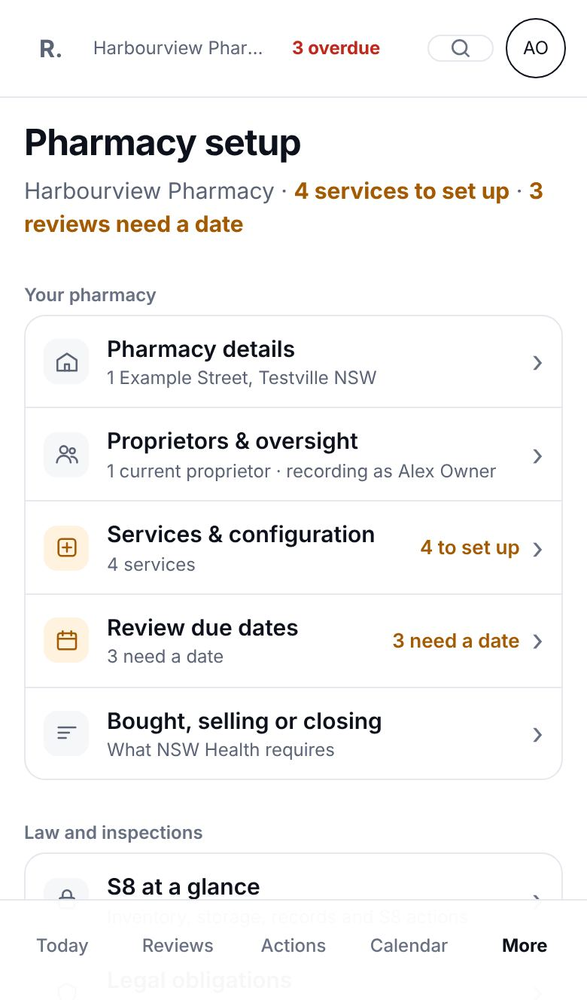
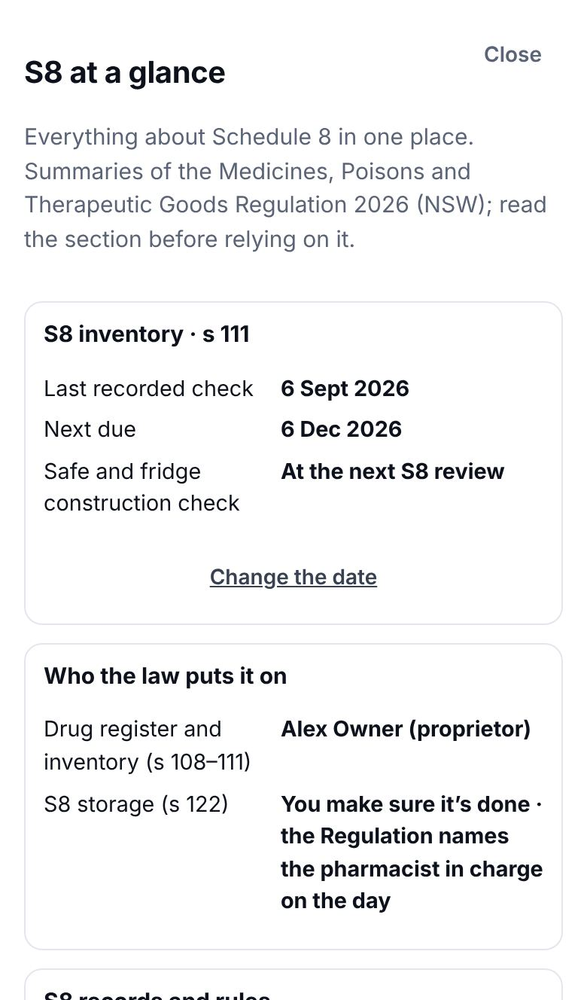
From Services → Dose administration aids. Record the change once, see before and after, then only the things that depend on it, each marked Required by law, Check or Recommended with its NSW source. Open actions, past reviews and dates stay as they are.
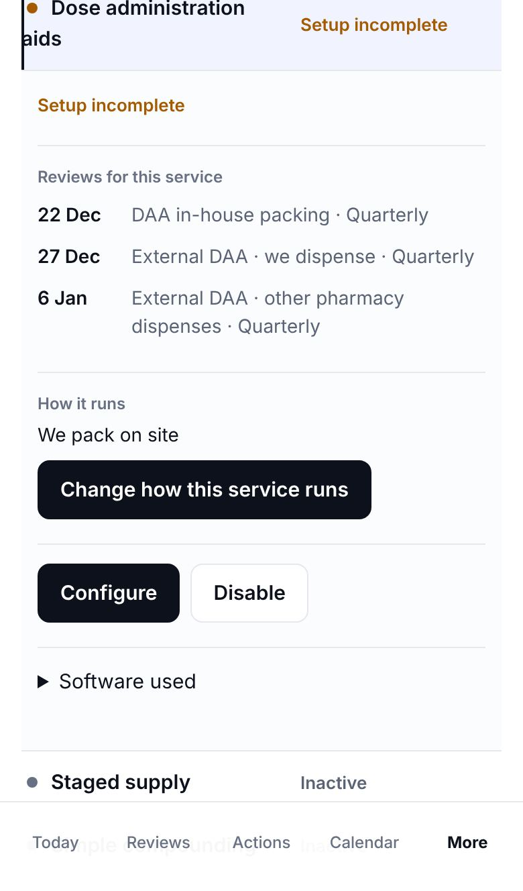
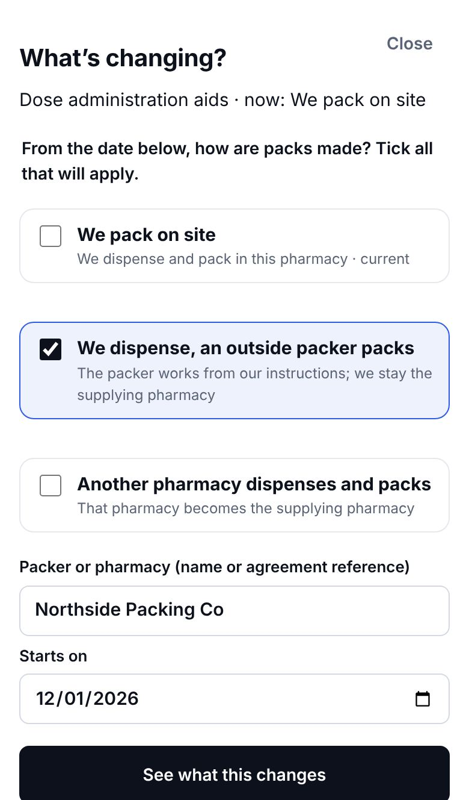
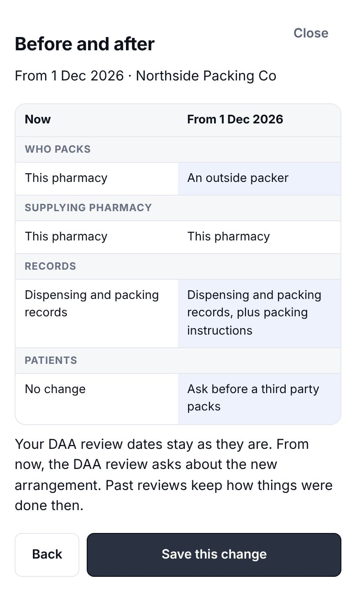
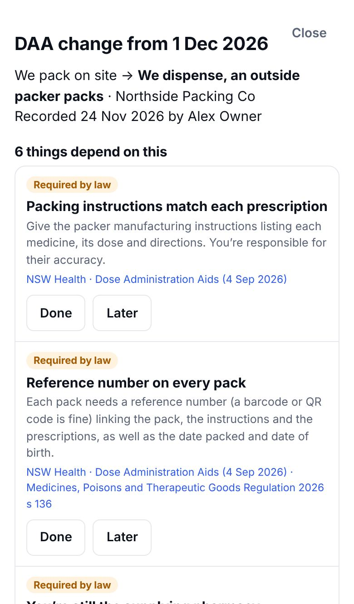
Not shown: the backup status in Setup and the one-time summary after a restore, the accessibility fixes (clearer grey text, filter buttons a screen reader understands), and the bug fixes from Codex’s retest. They’re all in the live app.